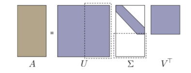
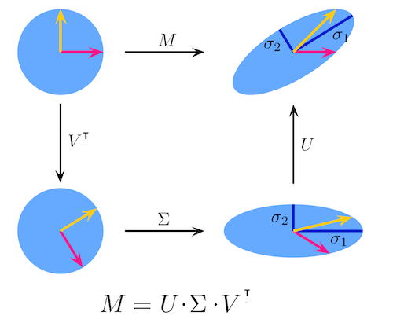

Chapter 6 奇异值分解 {SVD decomposition}
6.1 引入
首先我们来看 SVD 的引入（？证明（？，最直观的看法是比如我们想看变换 \(A\vec{x}\) 对向量 \(\vec{x}\) 造成的影响，至少我们来看对于模长的影响：
\[ R(\vec{x}) = \frac{\parallel A\vec{x}\parallel _2}{\parallel \vec{x}\parallel _2} \]
首先可以注意的是：
\[ R(\alpha \vec{x}) = \frac{\parallel A \alpha \vec{x}\parallel _2}{\parallel \alpha \vec{x}\parallel _2} = \frac{\parallel \alpha\parallel \cdot \parallel A \vec{x}\parallel _2}{\parallel \alpha \parallel \cdot \parallel \vec{x}\parallel _2} = \frac{\parallel A\vec{x}\parallel _2}{\parallel \vec{x}\parallel _2} \]
- \(R(\alpha \vec{x}) = R(\vec{x})\) ，说明研究单位向量 \(\parallel \vec{x}\parallel _2 = 1\) 足矣
- \(R(\vec{x}) \ge 0\)， 研究 \(R^2(\vec{x})\) 也一样
来看一下对向量模缩放的极值,用朗格朗日乘子法：
\[ L(\vec{x}) = (A\vec{x})^2 - \lambda(\vec{x}^2 - 1) \]
求导，看极值，依旧是我们熟悉的形式：
\[ (A^TA)\vec{x}_i = \lambda_i\vec{x}_i \tag{1} \]
我们想要看 \(A\vec{x}\) 对 \(\vec{x}\) 的模的 影响，不过出现的极值对应的是 \(A^TA\) 的特征值 o(╯□╰)o
这个特殊的矩阵具有的性质包括：
- \(\lambda_i \ge 0 \forall i\), 这里很容易理解，因为 \(A^TA\) 是实对称的，是正定的
- 这个矩阵的基是一组完整的正交组
我们更想知道的是变换与 A 的关系。对于 \(A^TA\) 的特征向量 \(\vec{x}_i\), 考虑： \(\vec{y}_i = A \vec{x}_i\)， 我们可以证明：
\(\vec{y}_i\) 要么是 \(\vec{0}\)， 要么是 \(AA^T\) 的特征向量。
注意上面我们查看极值处出现的是 \(A^TA\), 而 \(\vec{y}\) 对应的是 \(AA^T\), 一般情况下，他们是不同的，一个很简单的问题就是比如 \(A \in \mathbb{R}^{m \times n}\), 那么 \(AA^T \in \mathbb{R}^{m \times m}\), \(A^TA \in \mathbb{R}^{n \times n}\).
又或者即使 \(A \in \mathbb{R}^{n \times n}\) 也容易肉眼验证 \(AA^T\) 和 \(A^TA\) 是不一样的:
>>> import numpy as np
>>> a = np.random.rand(3,3)
>>> a
array([[0.73741709, 0.2207241 , 0.60793118],
[0.00490906, 0.18066958, 0.44795408],
[0.70657397, 0.5650763 , 0.29043162]])
>>> aat = np.dot(a, a.T)
>>> aat
array([[0.96208341, 0.31582341, 0.82232812],
[0.31582341, 0.23332846, 0.23566075],
[0.82232812, 0.23566075, 0.90290852]])
>>> ata = np.dot(a.T, a)
>>> ata
array([[1.04305484, 0.56292085, 0.6557093 ],
[0.56292085, 0.40067186, 0.37923277],
[0.6557093 , 0.37923277, 0.6545937 ]])
>>> np.allclose(aat, ata)
False
>>> from scipy import linalg
>>> linalg.eigvals(aat)
array([1.84996505+0.j, 0.0737421 +0.j, 0.17461325+0.j])
>>> linalg.eigvals(ata)
array([1.84996505+0.j, 0.0737421 +0.j, 0.17461325+0.j])不过 \(AA^T\) 和 \(A^TA\) 的特征值看起来算出来一样，实际上这是一个可以推广的结论：
\(A, B \in \mathbb{R}^{n \times n}, AB\) 和 \(BA\) 特征值一样.
一个简单的证明如下：
\[AB\vec{x} = \lambda \vec{x}\]
令 \(\vec{y} = B\vec{x}\), 那么（当然我们这里考虑的都是 \(\lambda \ne 0, \vec{x} \ne 0\))
\[B A \vec{y} = BAB\vec{x} = B \lambda \vec{x} = \lambda B \vec{x} = \lambda \vec{y} \]
回到 \(\vec{y}_i = A \vec{x}_i，\vec{y}_i\) 要么是 \(\vec{0}\)， 要么是 \(AA^T\) 的特征向量。
证明：
\[ \begin{aligned} \lambda_i \vec{y_i} {} &= \lambda_i A\vec{x_i}\\ &= A (\lambda_i \vec{x_i}) \\ &= A (A^TA \vec{x_i}) & \text{from (1)}\\ &= (AA^T) \vec{y}_i & \text{(2)} \\ \end{aligned} \]
所以 \(\vec{y}_i\) 是 \(AA^T\) 对应的特征向量，并且：
\[ \begin{aligned} \parallel \vec{y_i}\parallel {} &= \parallel A\vec{x_i}\parallel \\ &= \sqrt{ \parallel \lambda_i A\vec{x_i}\parallel ^2}\\ &= \sqrt{ \vec{x}_i^T A^T A \vec{x}_i} \\ &= \sqrt{ \vec{x}_i^T A^T A \vec{x}_i} \\ &= \sqrt{ \vec{x}_i^T \lambda_i \vec{x}_i} & \text{from (1)} \\ &= \sqrt{ \lambda_i \vec{x}_i^T \vec{x}_i} \\ &= \sqrt{ \lambda_i} \parallel \vec{x}_i\parallel \\ \end{aligned} \]
如果 \(\lambda_i = 0, \vec{y}_i = \vec{0}\), 所以这就证明了我们的说法： **\(\vec{y}_i\) 要么是 \(\vec{0}\)， 要么是 \(AA^T\) 的特征向量，并且 $= _i$.**
现在我们继续 k 是 \(A^TA\) 大于 0 的特征值数量，对应的特征值是 \(\lambda_1, \cdots, \lambda_k\), 对应的特征向量是 \(\vec{x}_1, \cdots, \vec{x}_k \in \mathbb{R}^n\), 我们又知道 \(AA^T\) 和 \(A^TA\) 的特征值一样，所以有：
\[ k = \text{number of} \lambda_i > 0 \\ A^TA \vec{x}_i = \lambda_i \vec{x}_i \\ AA^T \vec{y}_i = \lambda_i \vec{y}_i \\ \]
我们假设 \(\parallel \vec{x}_i\parallel = 1\), 取
\[\vec{y}_i = \frac{1}{\sqrt{\lambda_i}} A \vec{x}_i \tag{3}\]
可以证明：
\[ \parallel \vec{y}_i\parallel = \frac{1}{\sqrt{\lambda}} \parallel A\vec{x}_i \parallel = \frac{1}{\sqrt{\lambda}} \sqrt{\lambda} \parallel \vec{x}_i\parallel = 1 \]
所以如果 \(\vec{x}_i\) 都是单位向量的话， \(\vec{y}_i\) 也是， 所以我们可以取
\[ \bar{V} = \begin{pmatrix} \vec{x}_1 & \cdots & \vec{x}_k \end{pmatrix} \in \mathbb{R}^{n \times k} \\ \bar{U} = \begin{pmatrix} \vec{y}_1 & \cdots & \vec{y}_k \end{pmatrix} \in \mathbb{R}^{m \times k} \]
令 \(\vec{e}_1\) 为第 i 个标准正交基向量，则：
\[ \begin{aligned} \bar{U}^T A \bar{V} \vec{e}_1{} &= \bar{U}^T A \vec{x}_i & \bar{V} \text{ defination} \\ &= \frac{1}{\lambda_i} \bar{U}^T A (\lambda_i \vec{x}_i) \\ &= \frac{1}{\lambda_i} \bar{U}^T A (A^TA \vec{x}_i) & \text{ from (1)} \\ &= \frac{1}{\lambda_i} \bar{U}^T (AA^T) A \vec{x}_i \\ &= \frac{1}{\sqrt{\lambda_i}} \bar{U}^T (AA^T) \vec{y}_i & \text{from (3)}\\ &= \frac{1}{\sqrt{\lambda_i}} \bar{U}^T \lambda_i \vec{y}_i & \text{from (2)} \\ &= \sqrt{\lambda_i} \bar{U}^T \vec{y}_i \\ &= \sqrt{\lambda_i}\vec{e}_i \\ \end{aligned} \]
令 \(\Sigma = diag (\sqrt{\lambda_1}, \cdots, \sqrt{\lambda_k})\),所以：
\[\bar{U}^T A \bar{V} = \Sigma\]
再回首看一下这个结论，那就是：
\[\bar{U} \in \mathbb{R}^{m \times k}, \bar{V} \in \mathbb{R}^{n \times k}, A \in \mathbb{R}^{m \times n}, \Sigma \in \mathbb{R}^{k \times k} \]
但是 \(\bar{U}, \bar{V}\) 不是方阵， 我们可以添加一些基，使得 \(A^TA\vec{x}_i = \vec{0}\) 和 \(AA^T\vec{y}_i = \vec{0}\), 这样 \(\bar{U}, \bar{V}\) 也就变成了方阵，满足：
\[\bar{U} \in \mathbb{R}^{m \times k}, \bar{V} \in \mathbb{R}^{n \times k}\mapsto U \in \mathbb{R}^{m \times m}, V \in \mathbb{R}^{n \times n} \]
同时 \(\Sigma\) 对角也会变成：
\[ \Sigma_{ij} = \begin{cases} \sqrt{\lambda}_i & i = j, i \le k\\ 0 & \text{otherwise} \end{cases} \]
这样我们可以写出：
\[A = U \Sigma V^T\]
终于，至此我们推导出奇异值分解， \(A = U \Sigma V^T\)， 我们没有给 A 加上任何条件，它无需对称、无需正定、无需是实数。这就是奇异值分解。
方阵的奇异值分解：

非方阵的跟据我们上面的推导，可以写成这种紧凑型的：

也可以填0把 U、V 都写成方阵：

如果你拿到任何矩阵而毫无头绪，你总可以尝试奇异值分解。
6.2 理解
\[A = U \Sigma V^T\]
- 左奇异向量（left singular vector) : U 的列， span col A
- 右奇异向量（right singular vector）: V 的列， span row A (注意这里是V而不是\(V^T\)）
- 奇异值(singular value): \(\Sigma\) 的对角线，满足 \(\sigma_1 \ge \sigma_2 \cdots \ge 0\)
SVD = 方阵 x 对角阵 x 方阵， 一个方阵中包含了A的列向量的信息，另一个方阵中包含了A的行向量的信息。
其实我一直有一个疑惑就是为什么这个叫 singular value decompostion, 因为 non-invertable 的 矩阵也叫 singular 矩阵（invertible 也叫 nonsingular)，查询后知道，原来singular 有几个意思： single（单个）、special（特别/不常见）的意思。
如果我们取 n x n 随机矩阵 R 的话，基本上都是不可逆的，用 singular 表示它处理起来比较麻烦，特别，当然你也可以记成它单身，找不到伴 \(R^{-1}\), 而 singular value decompostion 则一定就是 我们把这个矩阵做了特殊分解了吧，o(╯□╰)o
注意 特征分解 和 奇异分解 的不同：
这两种矩阵分解尽管有其相关性，但还是有明显的不同。对称阵特征向量分解的基础是谱分析，而奇异值分解则是谱分析理论在任意矩阵上的推广。
为什么 SVD 这么引入注意？
因为我们可以把 SVD 这样来理解：
- \(V^T\) : 旋转
- \(\Sigma\) : 缩放
- U : 旋转
意思是任何矩阵旋转 + 缩放 + 旋转。

6.3 计算
- V 是 \(A^TA\) 的特征向量
- \(AV = U \Sigma\)， 非0 奇异值对应的 \(\vec{u}_i\) 为 \(AV\) 标准化的列
- \(AA^T\vec{u}_i = 0\) 可以解除剩下的
6.4 应用
6.4.1 例子一
如果我们已经有了 A 的 SVD 分解，我们可以简化很多事：
\[A = U \Sigma V^T\]
我们可以相应知道 \(A^{-1}\)， 当然前提 A 可逆（nonsingular 好绕):
\[ \begin{aligned} A^{-1} {} &= (U \Sigma V^T)^{-1} \\ &= (V^T)^{-1} \Sigma^{-1} U^{-1} \\ &= V \begin{pmatrix} \sigma_1 & & \\ & \ddots & \\ & & \sigma_n \end{pmatrix}^{-1} U^{-1} \\ &= V \begin{pmatrix} \frac{1}{\sigma_1} & & \\ & \ddots & \\ & & \frac{1}{\sigma_n} \end{pmatrix} U^T \\ \end{aligned} \]
这个很容易解， 方阵的转置是它的逆， 对角的逆直接是它每个对角元素的倒数。
容易解\(A\vec{x}= \vec{b}\)：
\[ \begin{aligned} A\vec{x} {} &= \vec{b} \\ U \Sigma V^T \vec{x} &= \vec{b}\\ \vec{x} &= V \Sigma^{-1} U^T \vec{b} \\ \end{aligned} \]
6.4.2 例子二
我们已经遇到过很多次这样的 setup 了：
\[ \text{minimize } \parallel \vec{x}\parallel _2^2 \\ \text{such that } A^TA\vec{x} = A^T \vec{b} \]
计算 \(A^TA\):
\[ \begin{aligned} A^T A {} &= (U \Sigma V^T)^T(U \Sigma V^T) \\ &= V \Sigma U^T U \Sigma V^T\\ &= V \Sigma^2 V^T \\ \end{aligned} \]
所以 $A^TA = A^T $ 可以写成：
\[ \begin{aligned} A^TA \vec{x} = A^T \vec{b} \iff V \Sigma^2 V^T \vec{x} &= (U \Sigma V^T)^T \vec{b}\\ {} V \Sigma^2 V^T \vec{x} &= V \Sigma U^T \vec{b} \\ \Sigma V^T \vec{x} &= U^T \vec{b} \end{aligned} \]
可以写成：
\[ \begin{aligned} A^TA \vec{x} = A^T \vec{b} \iff \Sigma \vec{y} &= \vec{d} \\ {} \vec{y} &= V^T \vec{x} \\ \vec{d} &= U^T \vec{b} \end{aligned} \]
上面的setup就可以改成：
\[ \text{minimize } \parallel \vec{y}\parallel _2^2 \\ \text{such that } \Sigma \vec{y} = \vec{d} \]
$ = V^T $ 这个变换是一个旋转，所以当然对模长没有影响。
上面的 setup 由 \(\vec{x}\) 变成了 \(\vec{y}\)， 那么有意思的地方也就出现了, \(\Sigma\) 是一个对角阵，所以：
\[ \begin{pmatrix} \sigma_1 & & \\ & \ddots & \\ & & \sigma_k & \\ & & & 0 \end{pmatrix} \begin{pmatrix} y_1 \\ \vdots \\ \\ y_n \end{pmatrix} = \begin{pmatrix} d_1 \\ \vdots \\ \\ d_m\end{pmatrix} \]
所以可以设置:
\[ \Sigma_{ij}^+ = \begin{cases} \frac{1}{\sigma}_i & i = j, \sigma_i \ne 0, i \le k\\ 0 & \text{otherwise} \end{cases} \\ \implies \vec{y} = \Sigma_{ij}^+ \vec{d} \\ \implies \vec{x} = V \Sigma_{ij}^+ U^T \vec{b} \]
这个矩阵 \(V \Sigma_{ij}^+ U^T\) 还有一个专门的名字： Pseudoinverse（伪逆?）,它有一些性质 ：
- A square and invertible ⇒ \(A^+ = A^{−1}\)
- A overdetermined ⇒ \(A^+\vec{b}\) gives least-squares solution to \(A\vec{x} = \vec{b}\)
- A underdetermined ⇒\(A^+\vec{b}\) gives least-squares solution to \(A\vec{x} = \vec{b}\) with least (Euclidean) norm
6.4.3 例子三
A 的另一种写法：
\[A = U \Sigma V^T \implies A = \sum_{i = 1}^l \sigma_i \vec{u}_i \vec{v}_i^T\\ l = \text{min}\{ m, n\}\]
上面这种看法/写法很有意思。我们把 A 看成是 列向量 x 行向量 的和。
注意 \(\vec{u} \vec{v}^T\) 又被定义为外积:
\[\vec{u} \otimes \vec{v} = \vec{u} \vec{v}^T\]
计算 $ A $ :
\[A\vec{x} = \sum_i \sigma_i (\vec{v}_i \cdot \vec{x}) \vec{u}_i\]
这个写法给我们一些提示，那就是计算 \(A\vec{x}\) 我们可以 忽略很小的 \(\sigma_i\)
同时 \(A^+\vec{x}\) 可以：
\[A^+ = \sum_{\sigma_i \ne 0} \frac{\vec{v}_i \cdot \vec{u}^T}{\sigma_i }\]
计算 \(A^+\) 可以忽略 很大的 \(\sigma_i\)
实际上有个定理 Eckart-Yound Theorem（低维矩阵近似）:
Suppose \(\widetilde{A}\) is obtained from \(A = U\Sigma V^T\) by truncating all but the k largest singular values \(\sigma_i\) of A to zero. Then,\(\widetilde{A}\) minimizes both \(\parallel A - \widetilde{A} \parallel _{Fbo}\) and \(\parallel A - \widetilde{A} \parallel _2\) subject to the constraint that the column space of \(\tilde{A}\) has at most dimension k.
意思就是 从 A 找到一个 rank 为 r 的矩阵 \(\widetilde{A}\)， 这个矩阵可以最小化与 A 之间的 Frobenius norm 和 2-norm, 这个 \(\widetilde{A}\) 是如何找到的呢？ 就是我们用 SVD 将 A 分解成 \(A = U\Sigma V^T\) ， 人然后 \(\Sigma\) 中最 k 个最大的 非0 奇异值。
Frobenius norm 的定义是：
\[ {\displaystyle \|A\|_{\text{F}}={\sqrt {\sum _{i=1}^{m}\sum _{j=1}^{n}|a_{ij}|^{2}}}={\sqrt {\operatorname {trace} \left(A^{*}A\right)}}={\sqrt {\sum _{i=1}^{\min\{m,n\}}\sigma _{i}^{2}(A)}}} \]
这样当然是最小化啦，
2-norm 对矩阵的定义是：
\[{\displaystyle \parallel A\parallel _2 = \max _{{\vec {v}}\neq {\vec {0}}}{\frac {\parallel A{\vec {v}}\parallel _{2}}{\parallel {\vec {v}}\parallel _{2}}}} = \text{max} \{ \sigma_i \} \]
这也很容易理解，因为\(A = U \Sigma V^T\) 旋转，缩放 ，旋转， 改变长度的只有缩放\(\Sigma\)， 而\(\sigma_i \ge 0\) 这个又是很显然的。(The singular values are non-negative real numbers.) 这个显然可以显然在上面的引入部分 \(\Sigma = diag (\sqrt{\lambda_1}, \cdots, \sqrt{\lambda_k})\)
实际上我们的奇异值也 $A^TA $ 的特征根开根号， 而 \(A^TA\) 为正定，所以必定奇异值非负。
6.5 例子
考虑 M:
\[\mathbf {M} ={\begin{bmatrix}1&0&0&0&2\\0&0&3&0&0\\0&0&0&0&0\\0&2&0&0&0\end{bmatrix}}\]
对 M 做 奇异值分解的话： \(UΣV^*\):
\[ U = \begin{bmatrix} 0 & -1 & 0 & 0 \\ -1 & 0 & 0 & 0 \\ 0 & 0 & 0 & -1 \\ 0 & 0 & -1 & 0\end{bmatrix} \\ \Sigma = \begin{bmatrix} 3 & 0 & 0 & 0 & 0 \\ 0 & \sqrt{5} & 0 & 0 & 0 \\ 0 & 0 & 2 & 0 & 0 \\ 0 & 0 & 0 & 0 & 0\end{bmatrix} \\ V^* = \begin{bmatrix} 0 & 0 & -1 & 0 & 0 \\ -\sqrt{0.2} & 0 & 0 & 0 & -\sqrt{0.8} \\ 0 & -1 & 0 & 0 & 0 \\ 0 & 0 & 0 & 1 & 0 \\ -\sqrt{0.8} & 0 & 0 & 0 & \sqrt{0.2} \end{bmatrix} \\ \]
>>> from scipy import linalg
>>> import numpy as np
>>>
>>> a = np.array([[1, 0, 0, 0, 2],
... [0, 0, 3, 0, 0],
... [0, 0, 0, 0, 0],
... [0, 2, 0, 0, 0]])
>>>
>>> u, s, vh = linalg.svd(a)
>>>
>>> u
array([[ 0., 1., 0., 0.],
[ 1., 0., 0., 0.],
[ 0., 0., 0., -1.],
[ 0., 0., 1., 0.]])
>>> s
array([3. , 2.23606798, 2. , 0. ])
>>> vh
array([[-0. , 0. , 1. , -0. , 0. ],
[ 0.4472136 , 0. , 0. , 0. , 0.89442719],
[-0. , 1. , 0. , -0. , 0. ],
[ 0. , 0. , 0. , 1. , 0. ],
[-0.89442719, 0. , 0. , 0. , 0.4472136 ]])可以看到这个用 scipy 来解 u 和 vh 跟上面有点区别，就是选择的方向的原因，o(╯□╰)o